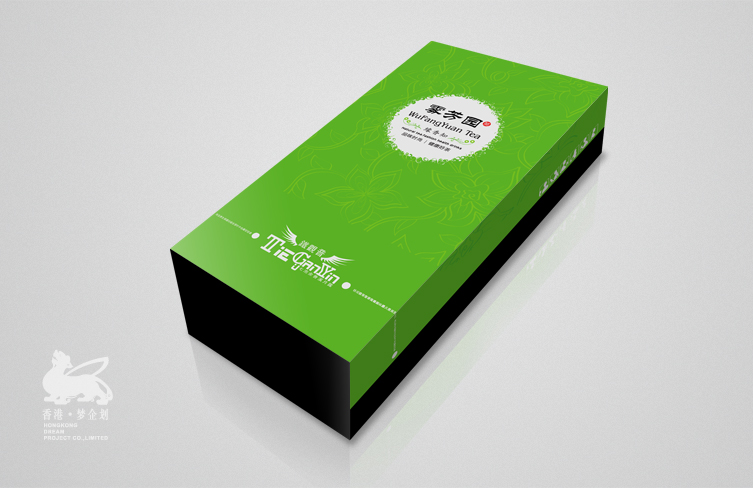
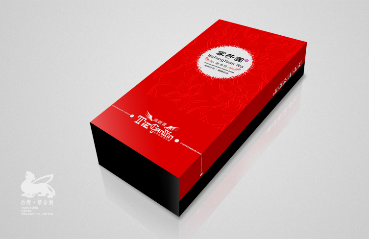
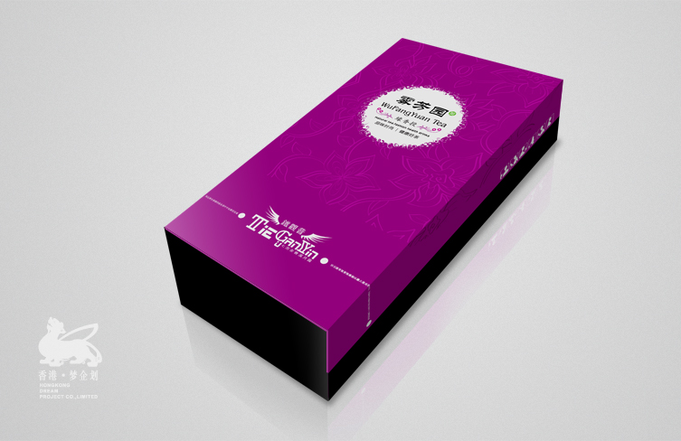

公司背景
七缘香茶业有限公司是入驻淘宝的第一批商家，在淘宝逢勃发展的这几年稳中求胜，逐渐的建立了自己的品牌发展模式。
随着电商时代的跨入，电商品牌化的转变，不仅在包装上同时在页面的视觉上渐渐的成为他们发展前进路上的制约，
2012年春季与我司初步接触，随着对我们的了解同年与我司形成战略性的合作。
天猫商城及产品包装规划设计
通过挖掘七缘香的品牌特点结合市场的需求，我们抓住其品牌“年轻花样”的特点，在产品包装及宝贝详情上更亲近年青一代的审美观点，
将品牌理念和健康时尚茶的观点深入到消费者的心中，建立起无形而又深远的影响力。
我们始终强调视觉是引导消费者购物的催化剂，每一个消费者都是感性的，要每一个观众带走我们的生活理念。
商城地址
http://qiyuanxiang.tmall.com/
服务内容
1、品牌特点及市场定位开发
2、产品及包装设计及营销开发
3、天猫商城产品宝贝描述建设
4、CRM老顾客维护系统开发
  